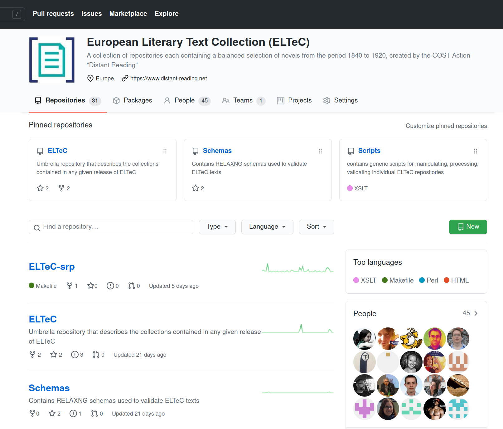

# Mehrsprachigkeit als Anspruch und Herausforderung: Aufbau und Analyse der European Literary Text Collection (ELTeC)... <img data-src="img/basics/distant-reading_logo.png" height="40"></img> <br/><br/> **Christof Schöch (Trier)** *** Dynamiken von Mehrsprachigkeit im digitalen öffentlichen Raum<br/>Universität Siegen, 27.-29. Mai 2021 <br/>https://distantreading.github.io/eltec-slides/ *** <img data-src="img/basics/tcdh-slim.png" height="50"></img> <img data-src="img/basics/uni-trier.png" height="50"></img> <img data-src="img/basics/cost-and-eu.png" height="70"></img> -- ### Überblick 1. [Was ist ELTeC ?](#/2) 2. [Kriterien für das Korpusdesign](#/3) 3. [Prinzipien der Textkodierung](#/4) 4. [Publikation von ELTeC](#/5) 4. [Anwendungsszenarien für ELTeC](#/6) 5. [Fazit](#/7) -- ## (1) Was ist ELTeC? --- ### ELTeC im Kontext * COST Action "Distant Reading for European Literary History" <!-- .element: class="fragment fade-in-then-semi-out" data-fragment-index="1" --> * Forschungsnetzwerk (31 Länder, 200+ Forschende) * Ziel: (methodische und geographische) Erweiterung der digitalen, mehrsprachigen Forschung zum europäischen Roman * Arbeitsbereiche: <!-- .element: class="fragment fade-in-then-semi-out" data-fragment-index="2" --> * Aufbau eines mehrsprachigen Romankorpus (ELTeC) * Entwicklung geeigneter digitaler Analysemethoden * Reflektion über die theoretischen Konsequenzen * Aufbau eines europaweiten Forschungsnetzwerks * 'Capacity building': Workshops, Austauschprogramm, gemeinsame Projekte --- ### "European Literary Text Collection" * Ein mehrsprachiges Korpus des europäischen Romans <!-- .element: class="fragment fade-in-then-semi-out" data-fragment-index="1" --> * Für die Zeit 1840-1920 (Kern) * Mindestens 10 verschiedene Sprachen * Sammlungen von jeweils 100 Romanen pro Sprache * Eigenschaften <!-- .element: class="fragment fade-in-then-semi-out" data-fragment-index="2" --> * Korpus repräsentiert die Bandbreite der Romanproduktion * Alle Texte sind linguistisch annotiert und in XML-TEI kodiert * Das Korpus wird mit einer offenen Lizenz publiziert * Weitere Informationen <!-- .element: class="fragment fade-in-then-semi-out" data-fragment-index="3" --> * Startpunkt: http://www.distant-reading.net/eltec/ * Letzter 'release': [v1.1.0, April 2021, 1200 Romane](https://github.com/COST-ELTeC/ELTeC) --- ### Stand der Dinge bei ELTeC <img data-src="img/eltec-overview_numnovels.png" height="500"></img> <br/><small>Siehe: https://distantreading.github.io/ELTeC/</small> -- ## (2) Kriterien für das Korpusdesign --- ### Relevanzkriterien * Romane (= längere, narrative, fiktionale Prosa) * Mindestlänge: 10.000 Wörter * Romane in Originalsprache * In Europa publizierte Romane --- ### Kriterien für die Zusammenstellung * Ziele <!-- .element: class="fragment fade-in-then-semi-out" data-fragment-index="1" --> * Vergleichbarkeit der Sammlungen * Die Bandbreite der Romanproduktion repräsentieren<br/>(kein repräsentatives Sample) * Nicht (nur) den Kanon reproduzieren * Kriterien <!-- .element: class="fragment fade-in-then-semi-out" data-fragment-index="2" --> * Erscheinungsdatum: 1840-59, 1860-79, 1880-99, 1900-1919 * Länge des Romans: short (10-50k), medium (50-100k), long (100k+) * Geschlecht der/des Autors: male, female, diverse/mixed * Neuauflagen 1970-2010: low (0-1), high (2+) * Romane pro Autor*in: 9-11 x 3, sonst möglichst 1 --- #### Aufbau der Sammlungen <img data-src="img/mosaic-eng.svg" height="400"></img> <img data-src="img/mosaic-rom.svg" height="400"></img> <small> |ELTeC-eng|||ELTeC-rom| |:---:|:---:|:---:|:---:| |100 Romane | | | 95 Romane| |EC5 100 | | | EC5 80| |Ausgezeichnete Balance | || Balance schwierig zu erreichen| </small> --- #### Das Diversitäts-Paradox <a href="img/eltec-overview_paradox.png"><img data-src="img/eltec-overview_paradox.png" height="400"></img></a> * Drei Ziele * Vergleichbarkeit der Sammlungen (=> strikte Kriterien) * Große Bandbreite der Romane (=> strikte Kriterien) * Große Bandbreite der literarischen Traditionen (=> weiche Kriterien) -- ## (3) Prinzipien der Textkodierung --- ### Drei Levels der Textkodierung * Natürlich nehmen wir eine Kodierung in XML-TEI vor <!-- .element: class="fragment fade-in-then-semi-out" data-fragment-index="1" --> * Es gibt einen gemeinsamen `header` <!-- .element: class="fragment fade-in-then-semi-out" data-fragment-index="2" --> * Drei Levels der Kodierung <!-- .element: class="fragment fade-in-then-semi-out" data-fragment-index="3" --> * Level 0: Minimale TEI-Kodierung (Metadaten + `div`, `p`, `hi`) * Level 1: Semantische TEI-Kodierung (e.g. `foreign`, `emph`) * Level 2: Kodierung mit Token-basierter Annotation (UPos) * Durch Schemas kontrolliert <!-- .element: class="fragment fade-in-then-semi-out" data-fragment-index="4" --> * Schemas durch sog. "ODD-Chaining" verbunden * Validierung mit RelaxNG und Schématron * soziale Kontrolle durch LB --- ### Metadaten * Kriterien für das Korpusdesign (siehe oben) <!-- .element: class="fragment fade-in-then-semi-out" data-fragment-index="1" --> * Provenienz <!-- .element: class="fragment fade-in-then-semi-out" data-fragment-index="2" --> * digitale Quelle (oder eigene Digitalisierung) * gedruckte Quelle (der digitalen Quelle) * Erste gedruckte Ausgabe (als Referenz) * Romantypen (optional) <!-- .element: class="fragment fade-in-then-semi-out" data-fragment-index="3" --> * Untergattung des Romans * Erzählperspektive * Eigenschaften des Textes <!-- .element: class="fragment fade-in-then-semi-out" data-fragment-index="4" --> * Sprache * Orthographie (original, modernisiert) * Alphabet (lateinisch, kyrillisch, "transition") * Kodierungslevel (siehe oben) -- ## (4) Publikation von ELTeC --- ### Publikationsstrategie * Für projektinterne Bedarfe <!-- .element: class="fragment fade-in-then-semi-out" data-fragment-index="1" --> * Kollaboratives Arbeiten (XML): [Github](https://github.com/cost-eltec) * Veröffentlichung und Archivierung von 'releases'<br/>mit DOI (XML): Github + [Zenodo](https://zenodo.org/communities/eltec/) * Überblick (HTML, XML): [Github.io](https://distantreading.github.io/ELTeC/) * Publikationsplattformen (über Zenodo hinaus): <!-- .element: class="fragment fade-in-then-semi-out" data-fragment-index="2" --> * [TEI Publisher](https://teipublisher.com/exist/apps/eltec/index.html) * [GAMS](http://glossa.uni-graz.at/context:eltec) * [TextGrid Rep](https://dev.textgridrep.org/browse/3tg6g.0) * Demnächst: [CLS INFRA](https://clsinfra.io/) * Weitere Publikationsformen <!-- .element: class="fragment fade-in-then-semi-out" data-fragment-index="3" --> * Pakete für die Nutzung mit Analysetools wie TXM oder Antconc * Bereitstellung über Analyseplattformen wie CQW --- #### Github </img> https://github.com/cost-eltec --- #### Zenodo <img data-src="img/eltec_zenodo.png" height="500"></img> https://zenodo.org/communities/eltec/ --- #### TEI Publisher <img data-src="img/eltec_teip.png" height="500"></img> https://teipublisher.com/exist/apps/eltec/index.html -- ## (5) Anwendungsszenarien für ELTeC --- ### Einige Szenarien * Gemeinsame Ziele <!-- .element: class="fragment fade-in-then-semi-out" data-fragment-index="1" --> * Existierende Methoden des "Distant Reading" auf die europäischen Literaturen anwenden * Methoden in einem mehrsprachigen Kontext evaluieren * Einige Beispiele (siehe Bibliographie) <!-- .element: class="fragment fade-in-then-semi-out" data-fragment-index="2" --> * Linguistische Annotation für mehrere Sprachen: Cínkova et al. 2020 * Mehrsprachige Annotation der Named Entities: Frontini et al. 2020 * Identifikation der direkten Rede: Byszuk et al. 2020 * Analyse der Romantitel: Patras et al. 2021 * Stilometrische Autorschaftsattribution: Schöch et al. --- ### Identifikation der direkten Rede <img data-src="img/byszuk-2020.png" height="400"></img> * Kurzzusammenfassung * Nutzung eines "multilingual sentence embedding" * Ergebnis: F1-Score ~0.89 für neun Sprachen --- ### Analyse der Romantitel <img data-src="img/patras-2021_annotation.png" width="500"></img> <!-- .element: class="fragment fade-in-then-fade-out" data-fragment-index="1" --> <br/><img data-src="img/patras-2021_lengths.png" width="500"></img> <!-- .element: class="fragment fade-in-then-fade-out" data-fragment-index="2" --> --- ### Stilometrie: Dendrogramme <a href="img/ELTeC-fra_eders-d_1000.png"><img height="500" data-src="img/ELTeC-fra_eders-d_1000.png"></a> <a href="img/ELTeC-rom_eders-d_1000.png"><img height="500" data-src="img/ELTeC-rom_eders-d_1000.png"></a> <br/>ELTeC-fra ELTeC-rom --- ### Stilometrie: Evaluation <a href="img/results_ELTeC-hun.svg"><img height="200" data-src="img/delta-hun.png"></a></img> <a href="img/results_ELTeC-fra.svg"><img height="200" data-src="img/delta-fra.png"></img></a><br/><a href="img/results_ELTeC-rom.svg"><img height="200" data-src="img/delta-rom.png"></a></img> <a href="img/results_ELTeC-slv.svg"><img height="200" data-src="img/delta-slv.png"></img></a><br/><br/>(Aktuell: deu, eng, fra, hun, por, rom, slv) -- ## Fazit --- ### Was ist ELTeC also ? * Natürlich: eine mehrsprachige Ressource <!-- .element: class="fragment fade-in-then-semi-out" data-fragment-index="1" --> * Ein Lernprozess im Bereich kollaborative Forschung <!-- .element: class="fragment fade-in-then-semi-out" data-fragment-index="2" --> * Ein Sammelpunkt für eine europäische Community <!-- .element: class="fragment fade-in-then-semi-out" data-fragment-index="3" --> * Eine Grundlage für die Entwicklung digitaler Methoden <!-- .element: class="fragment fade-in-then-semi-out" data-fragment-index="4" --> * Ein bescheidener Anfang für eine europäische Literaturgeschichte die wirklich digital, inklusiv und mehrsprachig sein möchte <!-- .element: class="fragment fade-in-then-semi-out" data-fragment-index="5" --> --- ### Vielen Dank für die Aufmerksamkeit <img height="450" data-src="img/danke.png"> <br/> Folien: https://distantreading.github.io/eltec-slides/ --- ### Bibliographie <small> * Aufbau von ELTeC (Auswahl) * Lou Burnard, Christof Schöch, Carolin Odebrecht: “In Search of Comity: TEI for Distant Reading”, in: _Journal of the Text Encoding Initiative_, 2021. https://doi.org/10.4000/jtei.3500 * Christof Schöch, Roxana Patraș, Diana Santos, Tomaž Erjavec: “Creating the European Literary Text Collection (ELTeC): Challenges and Perspectives”, in: _Modern Languages Open_ (forthcoming). Preprint: https://doi.org/10.5281/zenodo.4742419 * Cinková, Silvie, Tomaž Erjavec, Cláudia Freitas, et al., ‘Evaluation of Taggers for 19th-Century Fiction’, in DH_Budapest_2019, <http://elte-dh.hu/dh_budapest_2019-abstract-booklet/> * Frontini, Francesca, Carmen Brando, Joanna Byszuk et al., ‘Named Entity Recognition for Distant Reading’, in CLARIN Annual Conference 2020 Proceedings, pp. 27–41 <https://office.clarin.eu/v/CE-2020-1738-CLARIN2020_ConferenceProceedings.pdf> <br/><br/> * Nutzung von ELTeC (Auswahl) * Cinková, Silvie, and Jan Rybicki, ‘Stylometry in a Bilingual Setup’, in Proceedings of LREC 2020, pp. 977–984 <https://www.aclweb.org/anthology/2020.lrec-1.123/> * Byszuk, Joanna, Michał Woźniak, Mike Kestemont et al. ‘Detecting Direct Speech in Multilingual Collection of 19th Century Novels’, in Proceedings of LT4HALA 2020, pp. 100–104 <https://lrec2020.lrec-conf.org/media/proceedings/Workshops/Books/LT4HALAbook.pdf> * Mihurko-Poniž, Katja, Rosario Arias, J. Berenike Herrmann et al. ‘Thresholds to the “Great Unread”: Titling Practices across Multilingual Collections of European Novels’, Day of DH 2021, <https://www.youtube.com/watch?v=fMtkwCxkzfw>. </small>